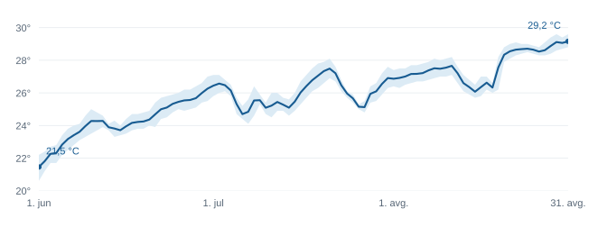

Budva · Crna Gora · Region
Dugoročne najave
Zima 2026/2027.
Veća vjerovatnoća
blage zime
Copernicus u septembarskoj najavi daje prednost toplijoj zimi u gotovo cijeloj Evropi. Za Budvu je to osnov za očekivanje blaže sezone, uz mogućnost kratkih zahlađenja.
Period najave
Procjena se odnosi na prośek cijele zime.
Temperatura
Iznad prośeka
Toplija zima je izglednija na nivou regiona. Za Budvu nema potvrđene procjene odstupanja u stepenima.
Padavine
Lokalna procjena otvorena
C3S očekuje vlažniju zimu u većem dijelu Evrope. Iz tog pregleda ne može se odrediti količina kiše na crnogorskom primorju.
Snijeg i vjetar
Prerano za detalje
Datumi zahlađenja, snijeg na obali i učestalost juga ostaju neizvjesni. Procjene za pojedinačne epizode prate se bliže terminu.
Osnov: C3S, 10. septembar 2026. Tekst za Budvu je tumačenje evropskog pregleda; lokalne vjerovatnoće nijesu izračunate.
Sezonske najave opisuju prośečne uslove tokom više mjeseci. Za planiranje narednih dana koristite prognozu za Budvu.
Osvrt · 1. jun do 31. avgust 2026.
Ljeto 2026. u Budvi
Obrađeno 2.10.2026.
Avgust je bio najtopliji i najsuvlji mjesec ljeta. U reanalizi za područje Budve njegova srednja temperatura iznosila je 29,8 °C, uz 1,4 mm padavina. Jul je imao više kiše od svog dugogodišnjeg prośeka.
Za cijelo ljeto srednja temperatura bila je 28,0 °C, odnosno 1,9 °C iznad prośeka od 1991. do 2020. Ukupno je palo 160,1 mm kiše, oko 14% manje od prośeka. Skoro sva kiša pala je u junu i julu.
- Temperaturno odstupanje ljeta
- +1,9 °Cu odnosu na 1991. do 2020.
- Ljetnje padavine
- 86%od uobičajene sezonske količine
| Mjesec | Vazduh | Odstupanje | Kiša | More |
|---|---|---|---|---|
| Jun | 26,3 °C | +2,1 °C | 73,6 mm | 24,2 °C |
| Jul | 27,8 °C | +1,0 °C | 85,1 mm | 26,0 °C |
| Avgust | 29,8 °C | +2,6 °C | 1,4 mm | 27,7 °C |
Vazduh i padavine: ECMWF ERA5 preko Open-Meteo, mreža oko 25 km. Ovo su procjene za područje Budve. Rang ljeta u istoriji staničnih mjerenja nije utvrđen.
Dnevni prośek porastao je sa 21,5 °C prvog juna na 29,2 °C posljednjeg dana avgusta. Linija prikazuje dnevni prośek, a svijetli pojas dnevni minimum i maksimum.

Izvor: Météo-France / Open-Meteo Marine. Arhivske modelske vrijednosti za more ispred Budve; temperatura uz pojedinačne plaže može se razlikovati. Obuhvaćena su sva 92 dana ljeta.
Podaci i obračun ljetnjeg pregleda
Prośek vazduha računat je iz dnevnih srednjih temperatura, a padavine sabiranjem dnevnih količina. Klimatološki prośeci potiču iz istih mjeseci od 1991. do 2020. godine. Za more su korišćene sve 24 satne vrijednosti svakog dana.
Tražena tačka je 42,28° N, 18,84° E. ERA5 vraća ćeliju 42,25° N, 19,00° E, a morski model 42,291664° N, 18,791672° E. Obje serije koriste lokalno vrijeme. Prośeci su zaokruženi tek pri prikazu.
Tihi okean
El Niño jača
Mjerenja: 28.9. · Prognoza: 10.9.2026.
Niño 3.4 · sedmični podatak
+2,2 °C
Odstupanje temperature površine mora u posljednjem sedmičnom izvještaju.
NOAA očekuje da El Niño traje i tokom zime. Njegova jačina sama po sebi ne određuje količinu kiše ili snijega u Budvi.
NOAA CPC, 28. septembar 2026. (PDF, str. 5). Sedmična anomalija i tromjesečni relativni indeks RONI različite su mjere.
Tromjesečni RONI najmanje +2,0 °C. Periodi se preklapaju.
Izvor: NOAA CPC, septembar 2026. Procenti su zaokruženi; 0% ne isključuje događaj.
Podaci i značenje indeksa
RONI prati odstupanje temperature mora u regionu Niño 3.4, uz korekciju za zagrijavanje tropskih okeana. Prag za El Niño je +0,5 °C, a za vrlo jak događaj +2,0 °C.
| Period | El Niño ukupno | Od toga vrlo jak | Neutralno |
|---|---|---|---|
| Okt / nov / dec 2026. | 100 | 98 | 0 |
| Nov / dec / jan 2026/27. | 100 | 93 | 0 |
| Dec / jan / feb 2026/27. | 100 | 75 | 0 |
| Jan / feb / mar 2027. | 100 | 39 | 0 |
| Feb / mar / apr 2027. | 97 | 5 | 3 |
| Mar / apr / maj 2027. | 82 | 0 | 18 |
| Apr / maj / jun 2027. | 43 | 0 | 55 |
Vrlo jak El Niño je dio ukupne vjerovatnoće El Niña. Preostalih 2% u periodu april / maj / jun odnosi se na La Niñu.
Globalna procjena · 2026. do 2030.
Temperature blizu rekorda
WMO daje 86% vjerovatnoće da bar jedna godina od 2026. do 2030. bude toplija od rekordne 2024.
Prikazani raspon odnosi se na globalnu godišnju temperaturu. Lokalno odstupanje za Budvu zahtijeva zasebnu procjenu.
Iznad prośeka od 1850. do 1900. godine.
Raspon za pojedinačne godine od 2026. do 2030.
Sljedeća izdanja izvora
NOAA CPC
Nova mjesečna ENSO procjena.Copernicus C3S
Oktobarske sezonske karte, u 14 h po lokalnom vremenu.
Najavljeni datumi objave izvora. Ova stranica se ažurira ručno.
Ranije najave
PDF dokumenti zadržavaju prvobitne podatke i zaključke. Osvrt na ljeto 2026. obrađuje završenu sezonu. Majska najava o drugom najtoplijem ljetu nije potvrđena rangiranjem staničnih mjerenja.
- Najava ljeta 2026.Maj 2026. · PDF
- Zima 2026/2027.Avgust 2026. · PDF
- El Niño 2026/2027.Avgust 2026. · PDF
- Balkan do 2030.Avgust 2026. · PDF
Izvori i način čitanja
- Copernicus C3S: sezonski pregled, izdanje od 10.9.2026. Osnov za evropsku zimsku najavu.
- NOAA CPC: sedmični ENSO izvještaj, 28.9.2026. Vrijednost Niño 3.4 na strani 5.
- NOAA CPC: vjerovatnoće jačine ENSO, septembar 2026. Izvor grafikona i tabele.
- NOAA CPC: mjesečna ENSO procjena, 10.9.2026. Najavljeno novo izdanje 8.10.
- WMO: Global Annual to Decadal Climate Update 2026-2035, 28.5.2026. Ovdje su izdvojeni podaci za 2026. do 2030.
- C3S: kako čitati sezonske prognoze. Objašnjenje prośeka, vjerovatnoća i ograničenja.
- ECMWF ERA5 / Open-Meteo i Météo-France / Open-Meteo Marine. Arhive preuzete 2.10.2026. za ljetnji osvrt; tačne adrese upita su u pratećim podacima.
Izvori provjereni 2.10.2026. NOAA i C3S mijenjaju sadržaj na istim adresama kada objave novo izdanje. Datumi uz grafikone označavaju izdanje korišćeno u ovom pregledu.